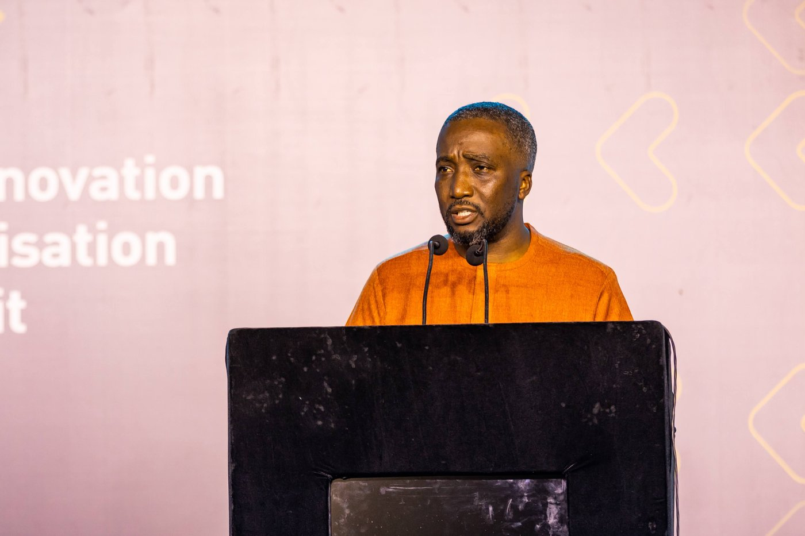
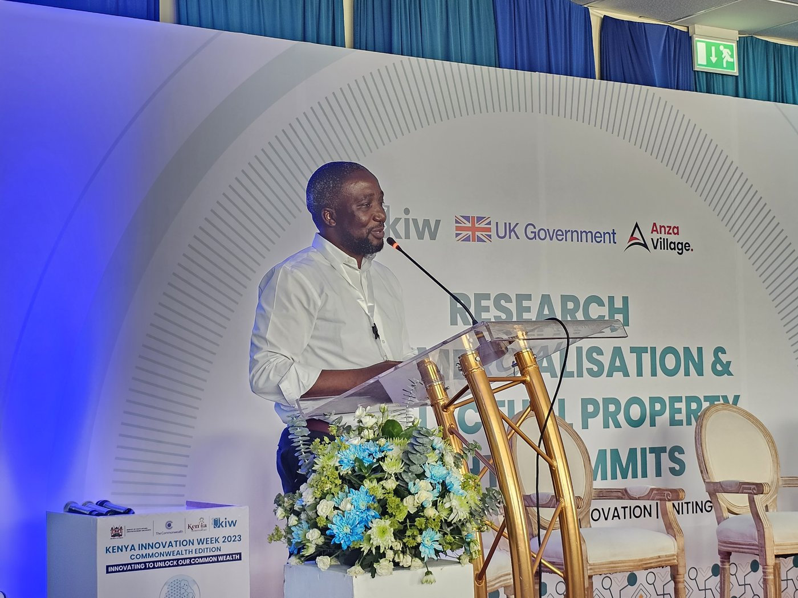
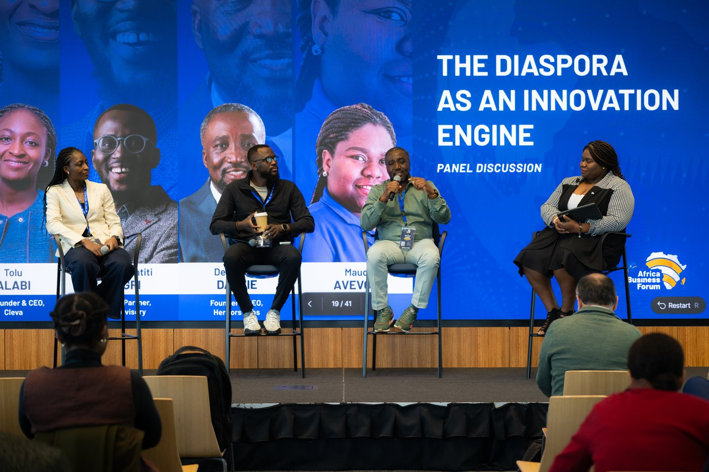

From Kellogg to Kenya Innovation Week to the Bank of Ghana's own convenings, I speak on digital payments architecture, national AI and digital policy, and how research becomes a market. I keynote, moderate, and teach.
Plus 30+ additional international engagements across Africa, Europe, North America, and Asia since 2010, including the Ghana Economic Forum.

Hosting ARICS, Accra
Kenya Innovation Week, Commonwealth Edition, Nairobi
Panellist, “The Diaspora as an Innovation Engine,” Africa Business ForumHow regulatory sequencing, not just technology, determines whether a digital payments market compounds or stalls.
Strategy-led statecraft for governments regulating technologies they are still learning to understand.
Turning research and invention into investable, market-ready ventures across emerging markets.
Current and most relevant first. The fuller archive is one click away below.
Also recorded, hosted off YouTube: Olin Africa Business Forum, Day 1 ↗ (Washington University in St. Louis).
The B&FT Online. Read the piece ↗
On the ARICS 2025 keynote, positioning me as a leading voice on innovation ecosystems and research-to-market systems across Africa. Read the piece ↗
DER SPIEGEL, a feature built around a profile of me and DreamOval's talent pipeline. Read the piece ↗
"The Dream Master": broadcast profile of me and DreamOval. Watch the episode ↗